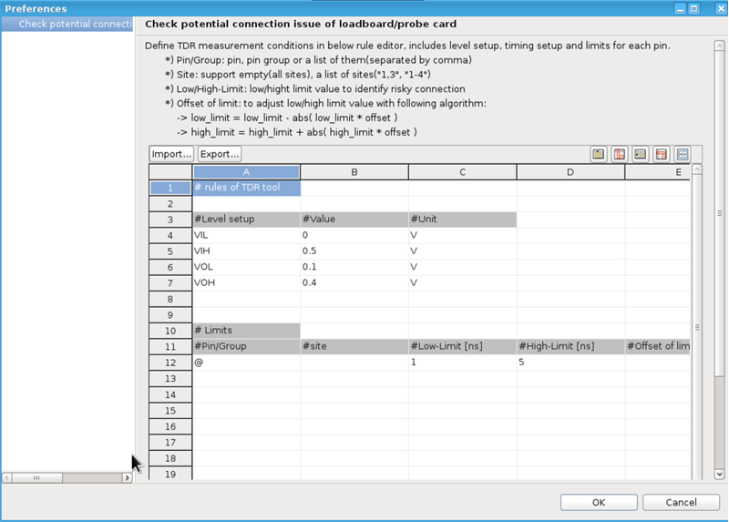

Set up the rules for TDR measurements, including level setup, timing setup, and limits
for each pin, before the execution.
Before you begin
Ensure you have launched the TDR Connectivity Checker
module,
and the sites for TDR measurement are selected as described in Launching TDR connectivity checker.
Procedure
-
Click the Configure global parameters icon
 on the TDR Connectivity Checker tab.
on the TDR Connectivity Checker tab.
The
Preferences window opens with the default values of pin
configurations displayed in the table.

-
If you have a TDR configuration file (in the CSV format), click the
Import button to load it.
The pin configuration from the file, including level and timing setup, are displayed in the
table.
-
In the Level setup section, double-click a cell to set up the levels
of VIL, VIH, VOL, and VOH.
In the TDR connectivity check, the VIL, VIH, VOL, and VOH values of level setup are set as
the values you entered here.
-
In the Limits section, double-click a cell to set up the limits of
transmission time of signals.
- #Pin/Group: Enter the pins or pin groups to be set up. If you enter
@, all digital pins are selected.
- #Site: Enter the sites to be set up. If no value is entered here,
all sites loaded in the testflow are defined.
- #L-Limit: Set up the lower limit of transmission time of the
selected pins or pin groups in the corresponding row.
- #H-Limit: Set up the upper limit of transmission time of the
selected pins or pin groups in the corresponding row.
- #Offset of limit: Adjust the #H-Limit and
#L-Limit value by adding or subtracting them by the entered
percentage.
In the TDR connectivity check, if the transmission time of signal through the selected pins
or pin groups exceeds the upper or lower limit set in the table, they are reported as
potentially problematic pins.
-
To add or delete a column or a row in the table, right-click in the table to see the
available actions.
Or, click the buttons at the top right of the table.
-
If you want to reuse the configurations in the table, click the
Export button to save them as a
CSV
file.
You can import the saved file in another configuration by clicking the
Import button.
-
Click OK to save the settings.
Results
The level and timing limits for each pin are set up for TDR connectivity check. You can now
start the execution.